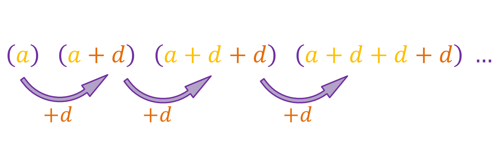
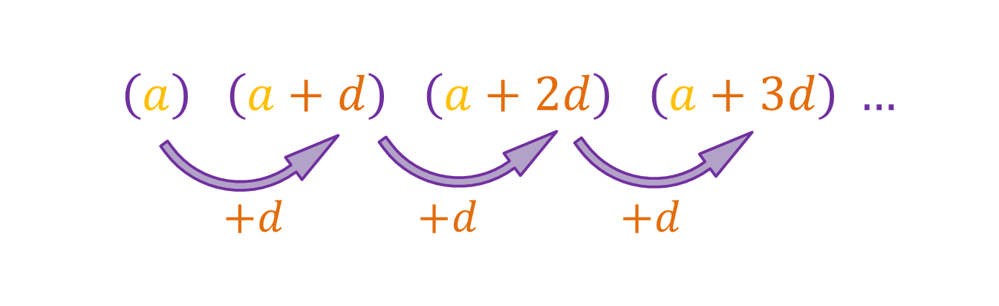
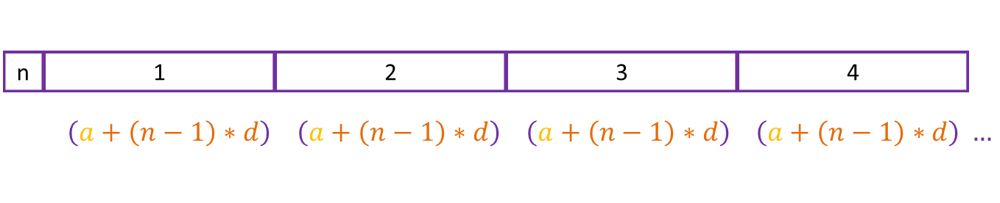

We know that the general formula for an arithmetic sequence is this:
The first term is represented as a while the common difference is d. We can simplify it like this:
Lets say n tells us which term we are in, so when n is 1, d is appearing 0 times, when n is 2, d is appearing 1 time, when n is 3, d is appearing 2 times and so on. This means that in the nth term, d appears [n - 1] times, so we can write each term like this:
So [a+(n-1)*d] is the formula to use when finding a term in an arithmetic sequence.